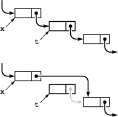

C++ Programming Robert Sedgewick - Princeton University Addison Wesley Professional Algorithms in C++, Parts 1–4: Fundamentals, Data Structure, Sorting, Searching, Third Edition
3.3. Linked Lists
When our primary interest is to go through a collection of items sequentially, one by one, we can organize the items as a linked list: a basic data structure where each item contains the information that we need to get to the next item. The primary advantage of linked lists over arrays is that the links provide us with the capability to rearrange the items efficiently. This flexibility is gained at the expense of quick access to any arbitrary item in the list, because the only way to get to an item in the list is to follow links from the beginning.
Definition 3.2. A linked list is a set of items where each item is part of a node that also contains a link to a node|
We define nodes by referring to nodes, so linked lists are sometimes called self-referent structures. Moreover, although a node's link usually refers to a different node, it could refer to the node itself, so linked lists can also be cyclic structures. The implications of these two facts will become apparent as we begin to consider concrete representations and applications of linked lists.
Normally, we think of linked lists as implementing a sequential arrangement of a set of items: Starting at a given node, we consider its item to be first in the sequence. Then, we follow its link to another node, which gives us an item that we consider to be second in the sequence, and so forth. Since the list could be cyclic, the sequence could seem infinite. We most often work with lists that correspond to a simple sequential arrangement of the items, adopting one of the following conventions for the link in the final node:
It is a null link that points to no node. It refers to a dummy node that contains no item. It refers back to the first node, making the list a circular list.
In each case, following links from the first node to the final one defines a sequential arrangement of items. Arrays define a sequential ordering of items as well; in an array, however, the sequential organization is provided implicitly, by the position in the array. (Arrays also support arbitrary access by index, which lists do not.)
We first consider nodes with precisely one link, and, in most applications, we work with one-dimensional lists where all nodes except possibly the first and the final each have precisely one link referring to them. This corresponds to the simplest situation, which is also the one that interests us most, where linked lists correspond to sequences of items. We will consider more complicated situations in due course.
Linked lists are primitive constructs in some programming environments, but not in C++. However, the basic building blocks that we discussed in Section 3.1 are well suited to implementing linked lists. Specifically, we use pointers for links and structures for nodes, as follows:
struct node { Item item; node *next; };
typedef node *link;
This pair of statements is nothing more than C++ code for Definition 3.2. Nodes consist of items (of type Item, uspecified here) and pointers to nodes, and we also refer to pointers to nodes as links. We shall see more complicated representations in Chapter 4 that provide more flexibility and allow more efficient implementations of certain operations, but this simple representation will suffice for us to consider the fundamentals of list processing. We use similar conventions for linked structures throughout the book.
Memory allocation is a central consideration in the effective use of linked lists. We have defined a single structure (struct node), but we will have many instances of this structure, one for each node that we want to use. Whenever we want to use a new node, we need to reserve memory for it. When we declare a variable of type node, we reserve memory for that variable at compile time, but we often organize computation around reserving memory at execution time, through calls on memory-management system operators. For example, the line of code
uses the new operator to reserve enough memory for a node and to return a pointer to it in x. In Section 3.5, we shall briefly consider how the system goes about reserving memory, because it is a good application of linked lists!
It is standard practice in C++ to initialize storage, not just to allocate it. To this end, we typically will include a constructor with each struct that we define. A constructor is a function that is defined within a structure that shares the same name as the structure. We shall consider constructors in detail in Chapter 4. Their purpose is to provide initial values for the data in the structure: To this end, they are automatically invoked when an instance of the structure is created. For example, if we define a list node with the code
struct node
{ Item item; node *next;
node (Item x; node *t)
{ item = x; next = t; };
};
typedef node *link;
then the statement
not only reserves enough memory for a node and returns a pointer to it in t, but also sets the item field of the node to the value x and the pointer field to the value t. Constructors help us to avoid programming bugs associated with uninitialized data.
Now, once a list node is created, how do we refer to the information it comprises—its item and its link? We have already seen the basic operations that we need for this task: We simply dereference the pointer, then use the structure member names—the item in the node referenced by link x (which is of type Item) is (*x).item and the link (which is of type link) is (*x).link. These operations are so heavily used, however, that C++ provides the shorthand x->item and x->link, which are equivalent forms. Also, we so often need to use the phrase "the node referenced by link x" that we simply say "node x"—the link does name the node.
The correspondence between links and C++ pointers is essential, but we must bear in mind that the former is an abstraction and the latter a concrete representation. We can design algorithms that use nodes and links, and we can choose one of many possible implementations of that idea. For example, we can also represent links with array indices, as we shall see at the end of this section.
Figures 3.3 and 3.4 show the two fundamental operations that we perform on linked lists. We can remove any item from a linked list, to make it shrink by 1 in length; and we can insert an item into a linked list at any point, to make it grow by 1 in length. For simplicity, we assume in these figures that the lists are circular and never become empty. We will consider null links, dummy nodes, and empty lists in Section 3.4. As shown in the figures, insertion and deletion each require just two statements in C++. To remove the node following node x, we use the statements
t = x->next; x->next = t->next;
or simply
To remove the node following a given node x from a linked list, we set t to point to the node to be removed, then change x's link to point to t->next. The pointer t can be used to refer to the removed node. Although its link still points into the list, we generally do not use such a link after removing the node from the list, except perhaps to inform the system, via delete, that its memory can be reclaimed.

|
To insert a given node t into a linked list at a position following another given node x (top), we set t->next to x->next (center), then set x->next to t (bottom).
To insert node t into a list at a position following node x, we use the statements
t->next = x->next; x->next = t;
The simplicity of insertion and deletion is the raison d'etre of linked lists. The corresponding operations are unnatural and inconvenient in arrays, because they require moving all of the array's contents following the affected item.
By contrast, linked lists are not well suited for the find the kth item (find an item given its index) operation that characterizes efficient access in arrays. In an array, we find the kth item simply by accessing a[k]; in a list, we have to traverse k links. Another operation that is unnatural on singly linked lists is "find the item before a given item."
When we remove a node from a linked list using x->next = x->next->next, we may never be able to access it again. For small programs such as the examples we consider at first, this is no special concern, but we generally regard it as good programming practice to use the delete operator, which is the counterpart to new, for any node that we no longer wish to use. Specifically, the sequence of instructions
t = x->next; x->next = t->next; delete t;
not only removes t from our list but also informs the system that the memory it occupies may be used for some other purpose. We pay particular attention to delete when we have large list objects, or large numbers of them, but we will ignore it until Section 3.5, so that we may focus on appreciating the benefits of linked structures.
We will see many examples of applications of these and other basic operations on linked lists in later chapters. Since the operations involve only a few statements, we often manipulate the lists directly rather than defining functions for inserting, deleting, and so forth. As an example, we consider next a program for solving the Josephus problem that provides an interesting contrast with the sieve of Eratosthenes.
Program 3.9. Circular list example (Josephus problem)|
To represent people arranged in a circle, we build a circular linked list, with a link from each person to the person on the left in the circle. The integer i represents the ith person in the circle. After building a one-node circular list for 1, we insert 2 through N after that node, resulting in a circle with 1 through N, leaving x pointing to N. Then, we skip M - 1 nodes, beginning with 1, and set the link of the (M - 1)st to skip the Mth, continuing until only one node is left.
#include <iostream.h>
#include <stdlib.h>
struct node
{ int item; node* next;
node(int x, node* t)
{ item = x; next = t; }
};
typedef node *link;
int main(int argc, char *argv[])
{ int i, N = atoi(argv[1]), M = atoi(argv[2]);
link t = new node(1, 0); t->next = t;
link x = t;
for (i = 2; i <= N; i++)
x = (x->next = new node(i, t));
while (x != x->next)
{
for (i = 1; i < M; i++) x = x->next;
x->next = x->next->next;
}
cout << x->item << endl;
}
|
We imagine that N people have decided to elect a leader by arranging themselves in a circle and eliminating every Mth person around the circle, closing ranks as each person drops out. The problem is to find out which person will be the last one remaining (a mathematically inclined potential leader will figure out ahead of time which position in the circle to take).
The identity of the elected leader is a function of N and M that we refer to as the Josephus function. More generally, we may wish to know the order in which the people are eliminated. For example, as shown in Figure 3.5, if N = 9 and M = 5, the people are eliminated in the order 5 1 7 4 3 6 9 2, and 8 is the leader chosen. Program 3.9 reads in N and M and prints out this ordering.
This diagram shows the result of a Josephus-style election, where the group stands in a circle, then counts around the circle, eliminating every fifth person and closing the circle.
Program 3.9 uses a circular linked list to simulate the election process directly. First, we build the list for 1 to N: We build a circular list consisting of a single node for person 1, then insert the nodes for people 2 through N, in that order, following that node in the list, using the insertion code illustrated in Figure 3.4. Then, we proceed through the list, counting through M - 1 items, deleting the next one using the code illustrated in Figure 3.3, and continuing until only one node is left (which then points to itself).
The sieve of Eratosthenes and the Josephus problem clearly illustrate the distinction between using arrays and using linked lists to represent a sequentially organized collection of objects. Using a linked list instead of an array for the sieve of Eratosthenes would be costly because the algorithm's efficiency depends on being able to access any array position quickly, and using an array instead of a linked list for the Josephus problem would be costly because the algorithm's efficiency depends on the ability to remove items quickly. When we choose a data structure, we must be aware of the effects of that choice upon the efficiency of the algorithms that will process the data. This interplay between data structures and algorithms is at the heart of the design process and is a recurring theme throughout this book.
In C++, pointers provide a direct and convenient concrete realization of the abstract concept of a linked list, but the essential value of the abstraction does not depend on any particular implementation. For example, Figure 3.6 shows how we could use arrays of integers to implement the linked list for the Josephus problem. That is, we can implement linked lists using array indices, instead of pointers. Linked lists were useful well before pointer constructs were available in high-level languages such as C++. Even in modern systems, array-based implementations are sometimes convenient.
This sequence shows the linked list for the Josephus problem (see Figure 3.5), implemented with array indices instead of pointers. The index of the item following the item with index 0 in the list is next[0], and so forth. Initially (top three rows), the item for person i has index i-1, and we form a circular list by setting next[i] to i+1 for i from 0 to 8 and next[8] to 0. To simulate the Josephus-election process, we change the links (next array entries) but do not move the items. Each pair of lines shows the result of moving through the list four times with x = next[x], then deleting the fifth item (displayed at the left) by setting next[x] to next[next[x]].
|